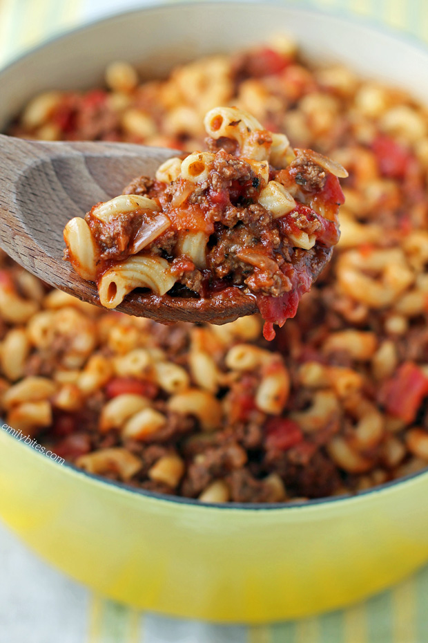

Image courtesy of and recipe adapted from Emily Bites
This one-pot Beef American Goulash is a dish that is although undeniably a comfort food, fills you up without putting you over your calorie limit!
Meaty, saucy and full of juicy tomatoes and hearty macaroni, this savory dish comes together simply and all in one pot (yay, less dishes!).
I definitely recommend making this recipe as written (don’t omit the soy sauce, paprika or seasoned salt – they’re necessary for the flavor!), but you can add to it if you wish. Some people add bell peppers or cheese, and you can definitely add other veggies or mix-ins. I am usually of the mindset that anything can be improved by cheese, but I honestly found this dish doesn’t even need it. I know, who the heck am I? I do sometimes sprinkle some Parmesan on top if I’m feeling cheesy.
Servings 8
Prep Time 35 minutes
Cook Time 45 minutes
Total Time 1 hour 20 minutes
Serving Size 2 cups Serving Per Container 4Nutrition Facts
Amount Per Serving
Calories
379 kcal
Total Fat
7 g
Saturated Fat
0 g
Polyunsaturated Fat
0 g
Monounsaturated Fat
0 g
Cholesterol
0 mg
Sodium
0 mg
Potassium
0 mg
Total Carbohydrate
49 g
Dietary Fiber
5 g
Sugars
10 g
Protein
33 g
Values are only an estimate, and in no way to be taken as 100% accurate.